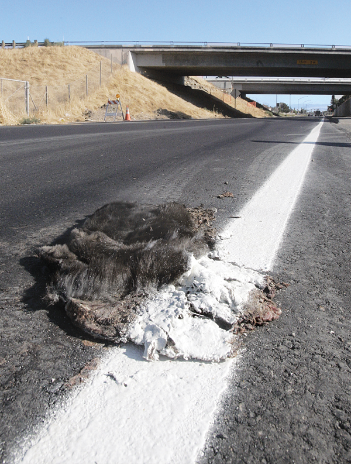

Flat Cat
Sorry kitty!

It's best if you can get one without paint...
Harvesting Instructions:
- Beware of traffic! Don't be careless like kitty
- Shake off the sand and dirt
- Make sure he's not too flat, that you can't scavenge any meat off of him
Not Too Flat Cooking Instructions:
- Place flat-cat in frying pan on medium heat with a little oil, 10W30 is best
- Turn flat-cat in approx 6 minutes...right about the time you smell hair burning
- Cook for about 5 minutes on the other side
Serve on a plate and add syrup to satisfaction, kinda like pancakes
Real Flat Instructions:
- Place flat-cat in pot of boiling water
- Reduce heat to a simmer
- Simmer covered for about 25 minutes
- Add veggies and spices
Serve in a bowl, just as you would chicken soup...
*This is complete satire...
Home
Top of Page